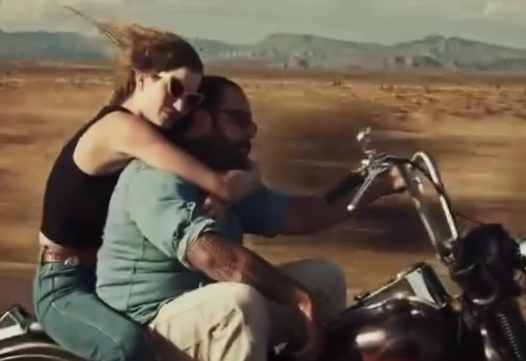
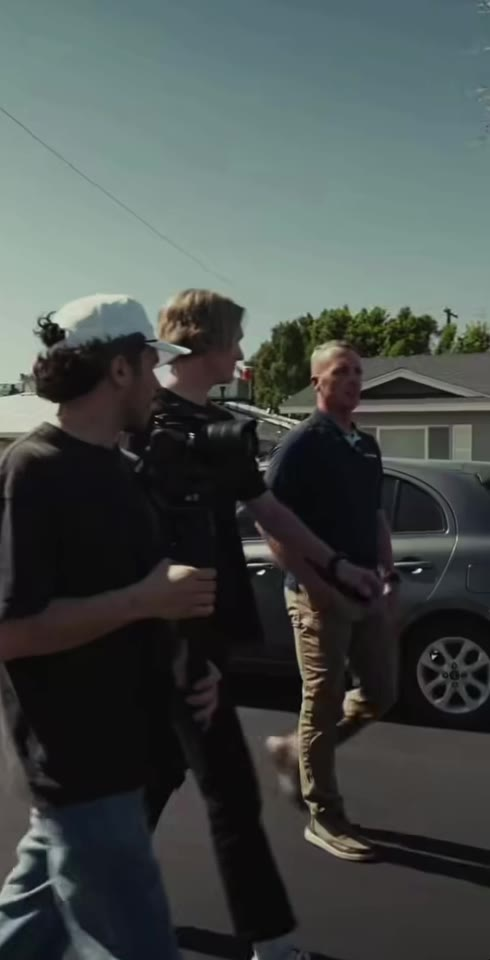

30.2672° N · 97.7431° W
FR 01 / 36
Music video · Field at dusk
JP Silva
Filmmaker, producer, photographer. Austin, Texas.
FR 04 – 14 · Music video
Desert Highway
A chopper, a film camera, open road. Frames from the highway and the field, late in the day.
-

FR 04 · Desert Highway
Open road, late light. -

FR 07 · Desert Highway
Centre line, nobody else. -

FR 11 · Desert Highway
The camera on the tank. -

FR 14 · Field at Dusk
The pickup, last light.
FR 18 – 19 · Photography
Portraits

Hat portrait, music video still.

Prints shown, group exhibition, 2025.
Light is the subject. Everything else is a reason to be there.

Field at Dusk
FR 29 / 36 · Showreel · 47 s, muted
Showreel
Forty-seven seconds, picture only. The full films, with sound, are on YouTube below.

A cross-section of the work. Sound off in this preview.
FR 30 / 36 · Five films on YouTube · posters from the library


FR 31 / 36 · About JP
Behind the work
- From
- Bauru, São Paulo, Brazil
- To
- Austin, Texas, since 2025
JP works feeling first: small crews, available light, and the patience to let a moment happen instead of staging it. The same eye goes to a live show, a music video and the quiet hour before either.

Between setups.

Afternoon light, dry ground.
FR 35 / 36 · Contact
Working from Austin. Travelling for the right story.
- Instagram@jp.media
- Emailenabled at launch